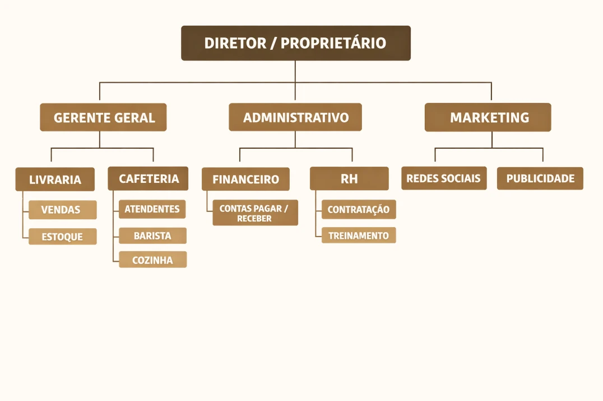
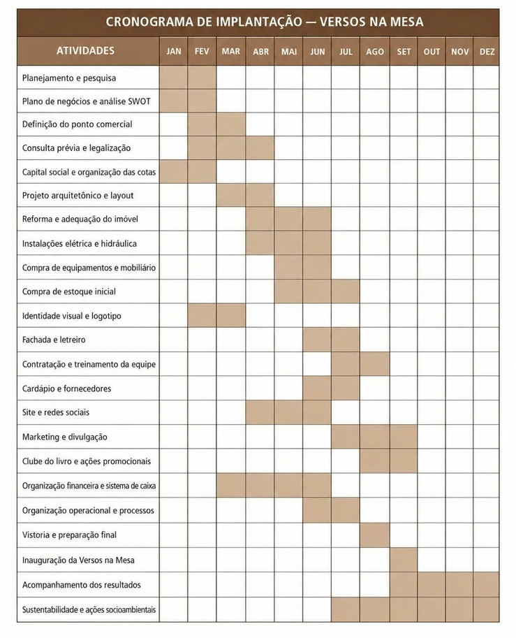

L
Lavinya Vitória Souza Rabelo
Participação de 33,33%
R$ 150.000,00Institucional
Informações do plano de negócios da Versos na Mesa, desenvolvido como Trabalho de Conclusão de Curso do técnico em Administração do Instituto Loide Martha (Rio de Janeiro, 2026), sob orientação do professor Alcebíades Dantas Lobo Junior.
Projeções, não resultados. Os valores desta página são estimativas acadêmicas do plano de negócios. Não representam faturamento realizado nem resultados de uma empresa em operação.
Sociedade
Participação de 33,33%
R$ 150.000,00Participação de 33,33%
R$ 150.000,00Participação de 33,33%
R$ 150.000,00Total da tabela de cotas: R$ 450.000,00 (100%).
Planejamento financeiro
Divergências no documento original. Os valores foram mantidos como aparecem em cada seção do TCC:
• Capital social: a cláusula 4ª do contrato social (p. 52) informa capital social inicial de R$ 150.000,00, enquanto a tabela de cotas e o planejamento financeiro apresentam R$ 450.000,00.
• Aluguel: a seção de localização (p. 11) informa aluguel aproximado de R$ 30.520,00 mensais, enquanto a tabela de despesas operacionais (p. 51) considera R$ 18.000,00.
• Horário: o texto do plano (p. 15 e 54) indica abertura às 06h de segunda a sábado; o folder impresso (p. 35) indica 08h. O site segue o texto do plano.
| Descrição | Valor |
|---|---|
| Reforma e decoração | R$ 70.000,00 |
| Equipamentos da cafeteria | R$ 55.000,00 |
| Estoque inicial de livros, papelaria e alimentos | R$ 85.000,00 |
| Móveis, mesas, cadeiras e estantes | R$ 35.000,00 |
| Tecnologia e sistema de caixa | R$ 10.000,00 |
| Fachada e identidade visual | R$ 10.000,00 |
| Legalização e documentação | R$ 5.000,00 |
| Divulgação de inauguração | R$ 5.000,00 |
| Utensílios e materiais de apoio | R$ 25.000,00 |
| Total | R$ 300.000,00 |
| Descrição | Valor |
|---|---|
| Vendas da livraria | R$ 100.000,00 |
| Vendas da cafeteria | R$ 90.000,00 |
| Vendas da papelaria | R$ 60.000,00 |
| Receita mensal total | R$ 250.000,00 |
| Capital social recebido | R$ 450.000,00 |
| Saída para implantação do negócio | − R$ 300.000,00 |
| Saldo inicial disponível | R$ 150.000,00 |
|---|
| Descrição | Valor mensal |
|---|---|
| Reposição de mercadorias e insumos | R$ 90.000,00 |
| Salários e encargos | R$ 60.000,00 |
| Aluguel | R$ 18.000,00 |
| Água, luz, gás e internet | R$ 8.500,00 |
| Impostos estimados | R$ 20.000,00 |
| Marketing e divulgação | R$ 5.000,00 |
| Contabilidade e sistemas | R$ 4.800,00 |
| Limpeza e manutenção | R$ 4.000,00 |
| Transporte e taxas diversas | R$ 5.000,00 |
| Total mensal | R$ 215.300,00 |
| Cenário | Saldo mensal | Payback |
|---|---|---|
| Otimista Receita R$ 280.000 · Despesas R$ 220.000 | R$ 60.000,00 | 8 meses |
| Realista Receita R$ 250.000 · Despesas R$ 215.300 | R$ 34.700,00 | 13 meses |
| Pessimista Receita R$ 220.000 · Despesas R$ 215.300 | R$ 4.700,00 | 96 meses |
| Capital investido | R$ 450.000,00 |
O saldo de R$ 150.000,00 permanece como reserva inicial. O fluxo de caixa efetivo depende dos prazos de recebimento, pagamentos a fornecedores, compras de estoque e outros movimentos financeiros.
Análise estratégica
Ferramenta de planejamento estratégico que avalia a empresa a partir de forças e fraquezas (aspectos internos) e oportunidades e ameaças (aspectos externos).
Estrutura e planejamento

